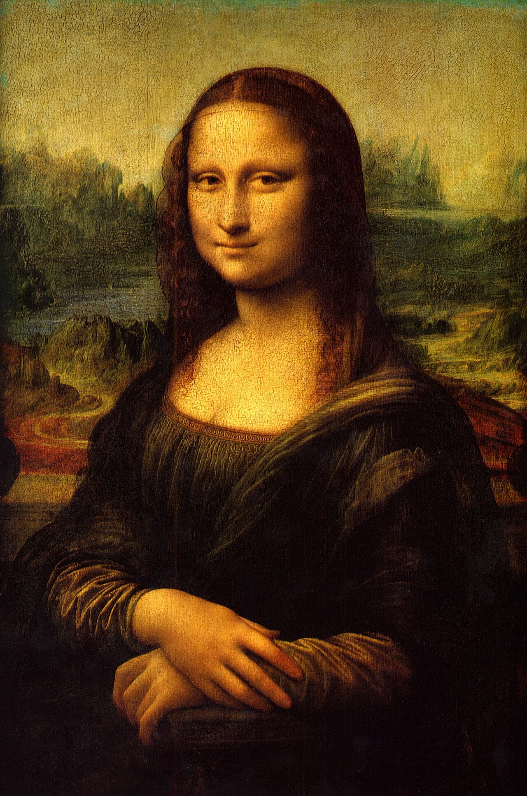
Mona Lisa
Leonardo’s celebrated portrait uses subtle shadow and an elusive expression to create a remarkable sense of presence.
Artwork referenceA digital exhibition
From quiet gardens to impossible dreams, discover the stories behind extraordinary works of art.
Before the modern turn
Works of portraiture, narrative, and observation that continue to invite slow looking.

Leonardo’s celebrated portrait uses subtle shadow and an elusive expression to create a remarkable sense of presence.
Artwork reference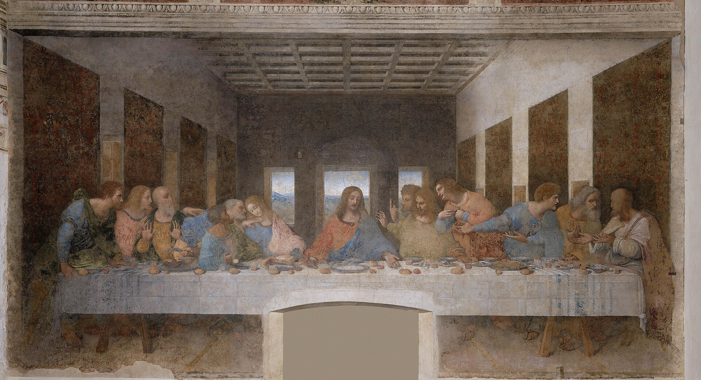
A daringly composed scene that turns a single announcement into a chain of distinct human reactions.
Artwork reference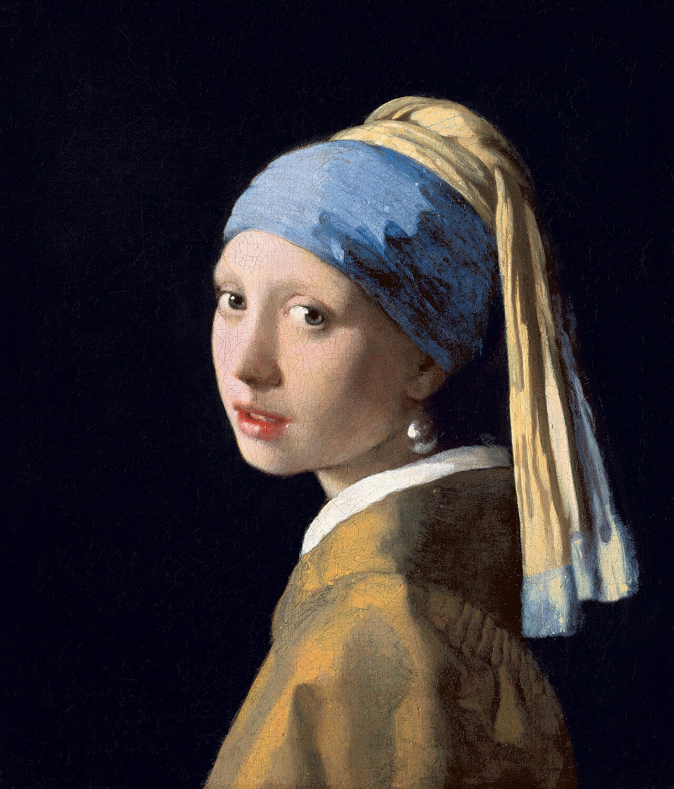
Light catches an earring and a turning face in this intimate, quietly theatrical study of a sitter.
Artwork reference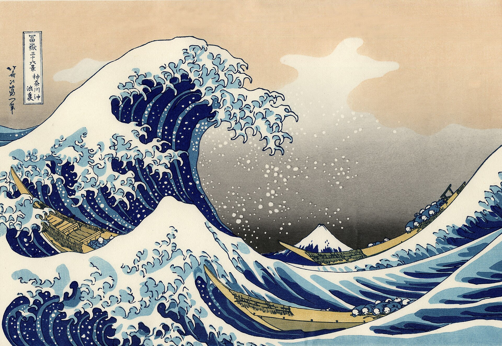
A gigantic curling wave dwarfs boats and frames Mount Fuji in Hokusai’s iconic woodblock print.
Artwork referenceLight in motion
Colour becomes a way to capture the atmosphere of a particular hour, weather, or mood.
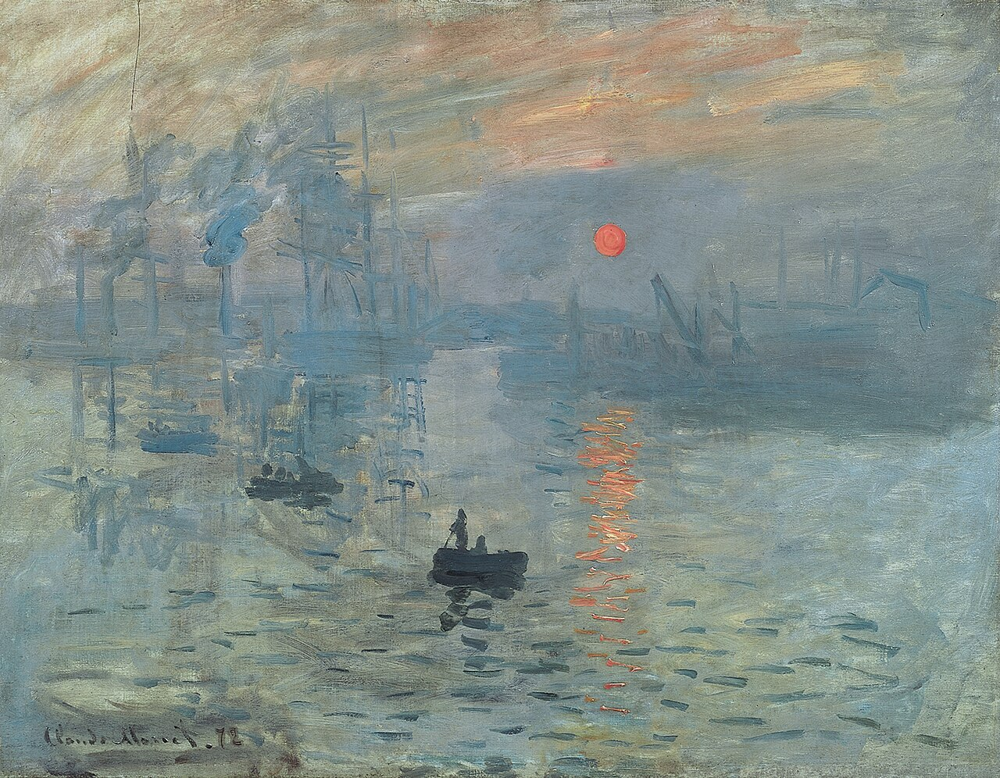
A small red sun glows through a misty harbour; its title gave the Impressionist movement its name.
Artwork reference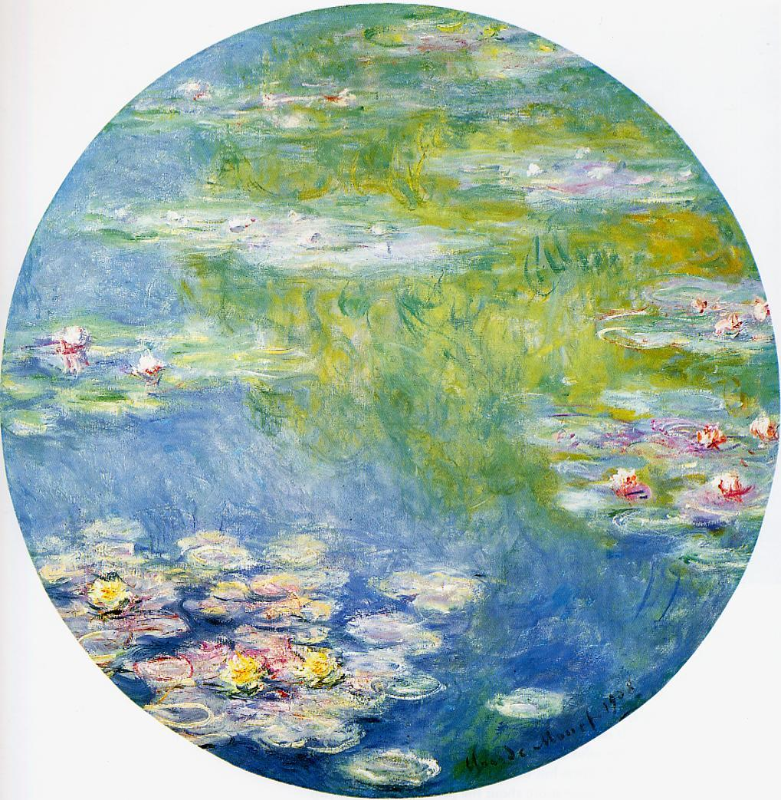
Monet’s garden pond becomes a luminous world of reflections, floating blossoms, and shifting colour.
Artwork reference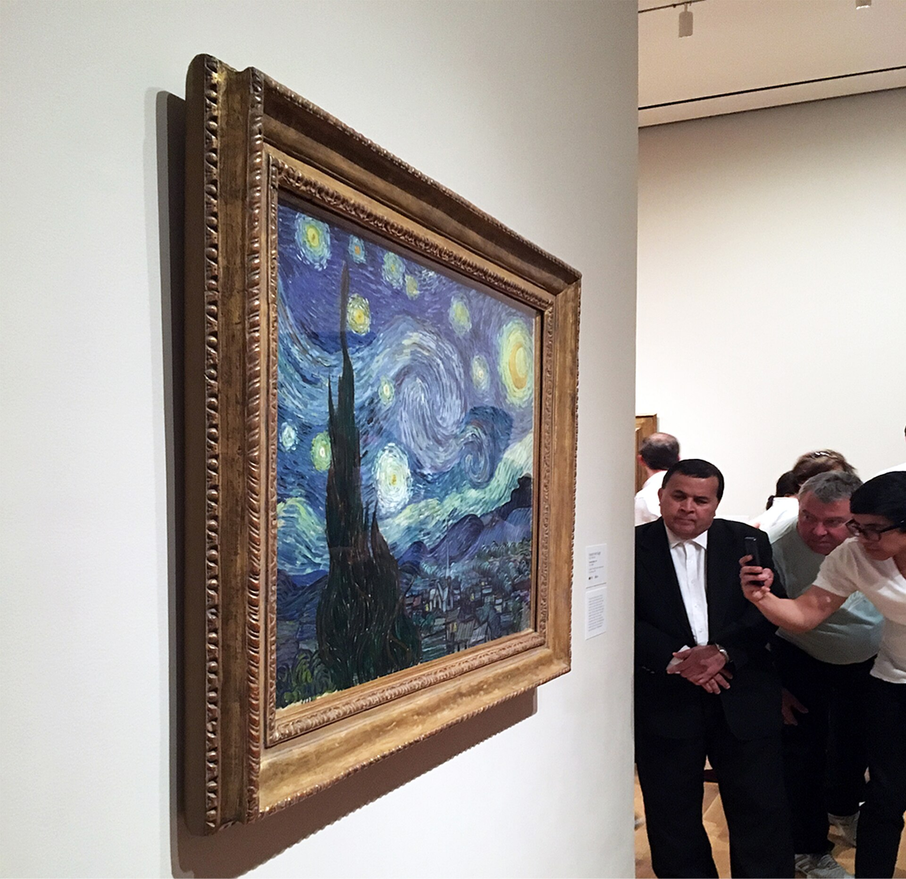
Van Gogh’s intense blue sky moves in broad spirals over a quieter village below.
Artwork reference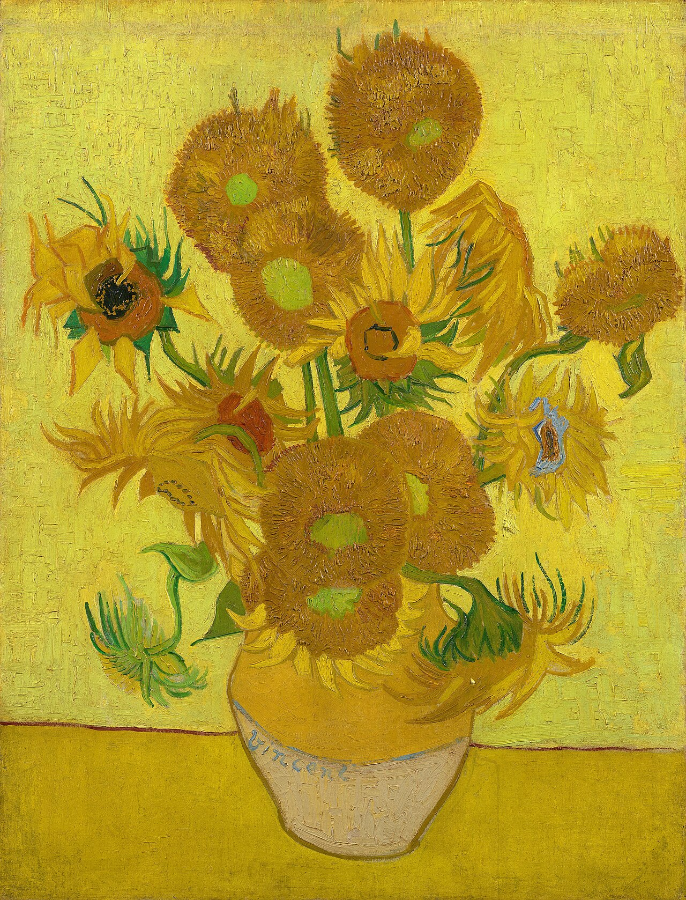
Thick, expressive paint turns a simple vase of flowers into a glowing study in yellows.
Artwork referenceNew visual languages
Paintings that fracture, stretch, or rethink reality to make old subjects feel startlingly new.
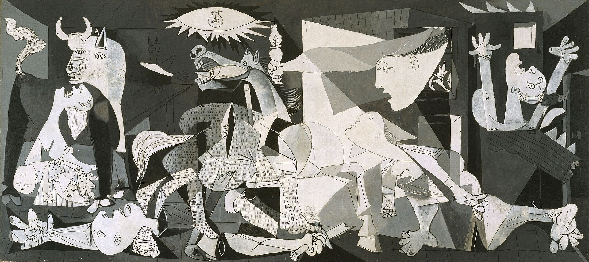
Picasso’s monumental monochrome painting became an enduring protest against the brutality of war.
Artwork reference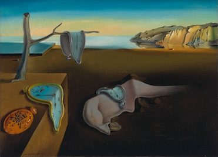
Melting watches transform a coastal landscape into a memorable meditation on time and dream logic.
Artwork reference
Gold leaf, ornamental pattern, and closeness merge in a celebrated image from Klimt’s golden phase.
Artwork reference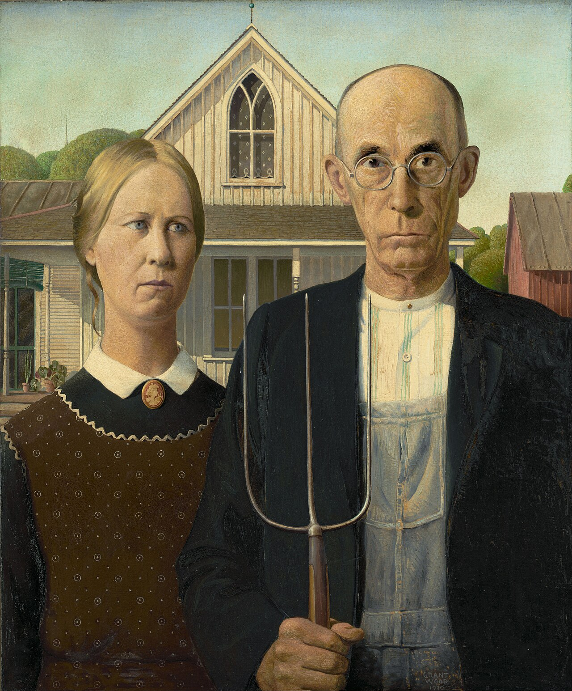
Its severe front-facing figures and careful detail became one of America’s most quoted images.
Artwork referenceContinue your discovery